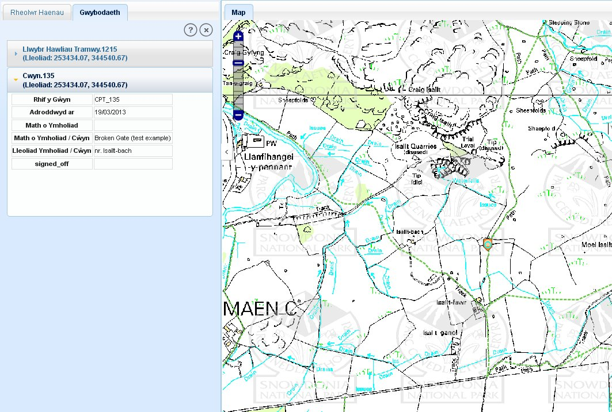

Caiff y teclyn gwybodaeth ei ddefnyddio ar gyfer gweld priodoleddau nodwedd wrth glicio arnynt. Ar gyfer gweld gwybodaeth, amlygwch yr ardal o ddiddordeb ar y map :
Cliciwch ar y teclyn gwybodaeth, bydd hyn yn galluogi’r defnydd ohono.
Nawr, dewiswch nodwedd o ddiddordeb ar y map. Bydd yr system yn agor tab newydd ‘Gwybodaeth’ yn y panel ar y chwith.
Os oes yna aml i nodwedd yn bodoli yn y lleoliad hwnnw, bydd y system yn cyflwyno’r holl briodoleddau yn yr adran ‘Rheolwr Haenau’ mewn modd dymchwel.
Yn rhagosodiedig bydd priodoleddau cyntaf y nodwedd yn cael ei gyflwyno mewn modd ehangedig ac fe gaiff ei amlygu ar y map fel a ddangosir yn y ffigwr isod.
Caiff y meysydd eu arddangos ar y chwith ac fe gaiff y niferoedd eu cyflwyno yn ôl eu trefn ar y chwith.
Ar gyfer gweld gwybodaeth o nodweddion eraill yn y tab gwybodaeth, cliciwch ar enw’r nodwedd.
Bydd y tab gwybodaeth yn ehangu i ddangos y wybodaeth ac fe fydd y nodwedd yn cael ei amlygu ar y map.

Tab Gwybodaeth